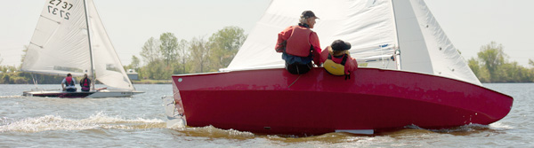

NEWS: Race Photos from Season Opener - April 26, 2015
We sail on Creve Coeur Lake in Maryland Heights, MO. The lake is ideal for beginners as well as experienced sailors.
We are a social sailing club with two goals; sail and enjoy the commeraderie of fellow sailors. We race like gentleman and use the rules for safety. Races are open to the public and run on scheduled Sundays beginning at 2pm from late April thorugh early November. Members compete for annual awards.
We try to get in three races on a given race day and try not to start a race after 3:30pm (so we can finish at a decent hour). 2015 Race Calendar
All of our skippers began as crew. Even our seasonsed skippers continue to learn. We are not a high priced boat club and there always seem to be afforable boats for sale.
For all who dreamed of sailing close to home...